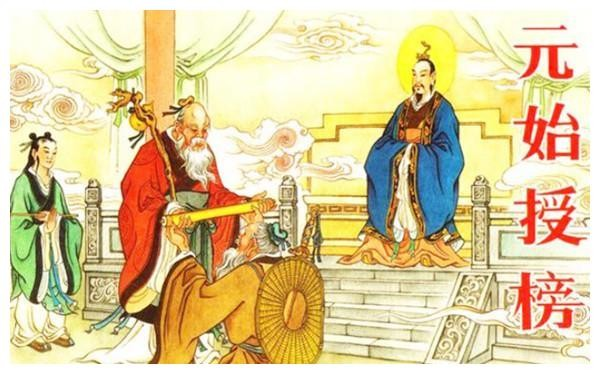

中国神话是中国文化的重要组成部分，包含了丰富的神话故事和传说，展现了古代人民的智慧和想象力。
主要神话角色
游戏中包含了许多中国神话中的角色，如嫦娥、后羿等，玩家可以与他们互动，体验他们的故事。
神话故事的影响
游戏的世界观和剧情设计都基于中国古代神话体系，展现了丰富的文化内涵。许多角色和场景都受到神话故事的启发。
神话与文化的关系
中国神话不仅是娱乐的来源，更是文化传承的重要载体，承载着古代人民的价值观和世界观。
神话的现代影响
现代社会中，中国神话仍然影响着文学、影视和游戏等多个领域，成为文化创意的重要源泉。
了解更多
想要深入了解中国神话的故事和角色，可以参考相关书籍和影视作品，或访问我们的官方网站获取更多信息。
了解更多